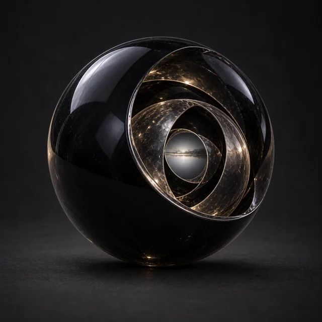

Предмет · undefined · №14
Стоимость Призыва: 3 Выберите знакомое существо на текущем плане и совершите Бросок Заклинания (17) с использованием Влияния, чтобы следить за ним. При успехе вы становитесь слепым, Уязвимым и Обездвиженным и не можете двигаться, но воспринимаете мир через его чувства до конца сцены, пока вы или цель не получите урон, или пока не решите закончить. Наслать Безумие: Один раз за продолжительный отдых во время наблюдения вы можете отметить 3 Раны, чтобы атаковать разум цели. Цель должна успешно совершить Бросок Реакции (16), иначе становится Параноидальной на 1d4 дней. Пока Параноидальна, любой отмеченный Стресс увеличивается на 1, а если больше нельзя отметить, она получает постоянное безумие (природу которого вы и Мастер определяете вместе).
Открыть в генераторе лута